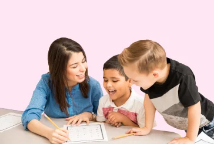
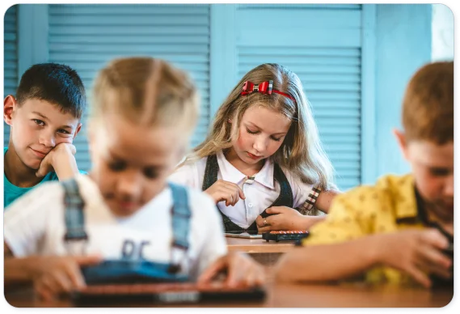
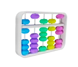
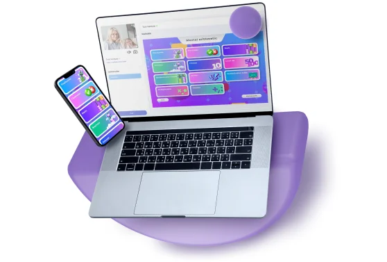
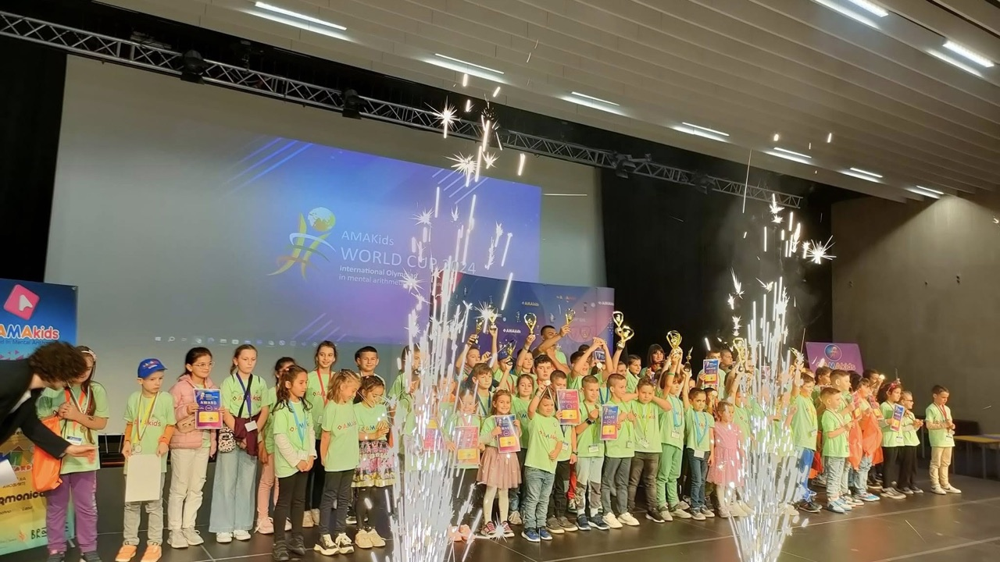

Our mission
Unlock children's intellectual potential through engaging learning experiences.
AMAkids partnership
Open your own learning center, add our programs to an existing school, or develop the network in your region.
Learning programs for different stages. Online and offline options.

A useful first step
Get the short presentation with the partnership formats, learning programs and launch foundations.
Why AMAkids
Unlock children's intellectual potential through engaging learning experiences.
Help children build skills, confidence and curiosity as they learn and grow.
Choose your path
Start with the model that matches your experience, goals and local market.

01For independent founders
Build a center from the ground up.
Start an AMAkids center with a recognized name and an established learning model.
For existing schools
Add a program.
Build on the students and location you already have, using a ready methodology and a prepared teaching team.
For regional network builders
Secure a territory. Build a network.
Grow AMAkids across a defined territory through your own centers and a sub-license partner network.
Availability, scope and terms depend on the country and partnership model.
The learning offer
Programs are available online and offline.

A structured course using abacus-based and mental calculation exercises to develop children's learning skills.
Ask about this courseAn engaging English program designed around communication, projects and learning together.
Ask about this courseA program focused on memory development and practical learning skills.
Ask about this courseWhy partner with us
A focused course portfolio and several ways to bring it to your market.
Mental Arithmetic, English, Memorika and programs adapted to the needs of each market.
Programs can be offered in either learning format.
Open a center, add a program to a school, or develop a regional network.
Brandbook, basic guidelines, training and consultations within the agreed scope.

Partner foundations
A ready-to-use teaching package, focused training and ongoing technical and operational support help your team prepare to deliver the selected AMAkids programs.
Lesson plans, game guides, homework instructions, textbooks, lesson presentations and other course materials.
Course-specific training prepares teachers to use the methodology, materials and learning platform.
Use the AMAkids platform and its features, with technical and operational guidance as you set up and run your program.
The learning experience
Digital practice, visible progress and recognition help make learning engaging between lessons.
Digital platform · Student motivation
The platform supports practice between lessons and gives each child new tasks and goals. Progress statistics, a reward system and game-style challenges help children see what they have achieved and what they can try next.
Students can continue practicing and engaging with learning beyond the classroom.
Printed learning materials are complemented by interactive augmented-reality experiences.
Course materials give teachers a structured foundation for delivering lessons.
A tool for the business owner
Keep the moving parts of your center in view: manage branches and student records, organize schedules and groups, set pricing and review performance statistics—all in one CRM.
Take a quick look at the interface and selected features in the video.
Visible progress
With regular lessons and practice, children may begin calculating mentally within their first month. They can then build speed and confidence and progress toward more demanding modes. Progress depends on age, starting level and lesson regularity.
The student solves two different examples mentally at the same time. It is a vivid demonstration of how practice can lead to more complex challenges.
Caesar combines fast mental calculation with other actions that require concentration. It demonstrates how students can sustain focus while taking on a demanding mental task—a skill some learners even bring to television talent shows.
A community of achievement
AMAkids and our partners regularly host major international events where students can meet, compete and celebrate their progress. The Academy also holds annual online tournaments, open to students around the world from home.
International Mental Arithmetic Olympiad · 2025

Partnership terms
Every market is different. That is why AMAkids develops partnership proposals based on the local business environment, the scope of cooperation and the partner’s development plans.
Whether you are planning to open an educational center, introduce AMAkids programs into an existing business or develop a network in your region, we work with you to identify a suitable partnership model.
Your market, your plan
Depending on the proposed model, we consider:
Local demand, target audience and competitive landscape.
Selected programs, territory and planned scale of operations.
Launch priorities and the intended pace of growth.
Relevant market characteristics and requirements for operating in your country.
From idea to proposal
Tell us about your market and business plans.
Discuss the available partnership models with our team.
Receive a proposal tailored to your market and intended scope of cooperation.
Explore the practical requirements and next steps for launching your project.
Planning your finances
Start with two groups of costs. Which ones apply depends on your country, partnership model and the resources you already have.
An existing school or center may already have premises, staff or equipment. Adding a program can therefore focus on team preparation, localization, technical setup and local promotion instead of fitting out a new space. We tailor the estimate to what you already have.
Share your market, chosen partnership model and development plans. Our team will discuss a tailored estimate and the practical requirements for your project.
How to move forward
Tell us whether you want to open a center, add a program or develop a regional network.
Share your country, existing resources and the programs you are interested in.
Review availability, scope, training and market-specific commercial terms with the team.
Frequently asked questions
Clear answers about AMAkids programs, choosing a partnership model, preparing your team and estimating local costs.
AMAkids combines a structured teaching methodology with a flexible program portfolio, a digital learning platform and a built-in motivation system. Interactive practice helps make progress visible early, while the partner can shape the offer to the local market.
The methodology aims to support the balanced development of both brain hemispheres. Across the programs, children practice attention, focus, processing speed, visual thinking and memory—skills they can use at school and in everyday life.
The overall target age range is 5 to 16. Programs are organized into age-appropriate groups. English courses are also matched to students’ current language level.
Yes. Depending on the market and agreement, you can begin with a selected program and expand your offer later, or discuss a broader package from the start.
The ready-to-use teaching package includes lesson plans, guides for educational games and homework, textbooks, lesson presentations and the other course materials needed to prepare and deliver classes.
The platform is available in more than 15 languages, with additional localization possible. Partner and teacher training is delivered online in English or Russian. AMAkids localizes the platform and app; the partner adapts selected programs and trainer materials when a new local language is needed.
You can request a platform demonstration, trial access to the student interface and games, examples of teaching materials and a concise course outline.
Single-Unit is for opening your own AMAkids center. School Partnership adds selected programs to an existing school or education business. Master Franchise is for developing an available territory through a partner network. Availability and scope are agreed for each market.
Previous experience is not a requirement, though it can be useful. AMAkids provides training for the selected programs and helps you understand the launch process. The most important starting points are motivation, initiative and readiness to lead the project.
Yes, after completing the relevant AMAkids training. Training is delivered online in English or Russian, and certificates are issued for the completed course.
Partners receive the brandbook and basic guidelines, a ready-to-use teaching package, training and access to the AMAkids platform. Ongoing technical and operational support is available within the agreed partnership scope. Local marketing and day-to-day business operations remain the partner’s responsibility.
Requirements depend on the model and local regulations. A dedicated classroom should provide a comfortable learning environment and the necessary teaching equipment, such as a board, screen, teacher’s computer and demonstration abacus. A reception or waiting area may also be useful.
A new center typically takes around 3 to 6 months to prepare and open. An existing location, audience and team can shorten the process. The actual timeline depends on local requirements and teacher preparation.
Yes. We consider applications in new markets and in countries where AMAkids is already present. Existing rights and partner coverage are reviewed before confirming the available model and territory.
Exclusive rights may be considered for an available territory after a market review and agreement on a development plan. The territory, responsibilities and conditions are agreed individually.
Yes. A school adding AMAkids programs may retain its own brand. AMAkids teaching materials and the platform remain standardized; a dedicated AMAkids center follows the AMAkids identity.
The partner leads local promotion, staffing and day-to-day operations. AMAkids provides the brandbook, basic brand guidelines, training and the technical and operational guidance agreed for the partnership.
Plan for launch costs such as the initial AMAkids payment, training if charged separately, business registration, premises and equipment, localization where needed and launch marketing. Recurring costs may include salaries, rent and utilities, taxes and accounting, local marketing, supplies, maintenance and any applicable AMAkids royalties.
Yes. We can discuss an individual estimate based on your country, partnership model, existing resources and planned scope. There is no single financial model for every market, and an estimate is not a guarantee of business results.
Pricing is adapted to local market conditions and agreed within the partnership framework. Discount policies and their treatment in royalty calculations are clarified for the specific agreement.
Agreement terms are discussed for the selected model and market. AMAkids agreements are commonly signed for three years; a one-year trial term may also be considered. Renewal, termination and any transfer of rights follow the signed agreement.